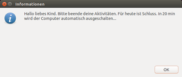

pam time
Dieser Artikel wurde für die folgenden Ubuntu-Versionen getestet:
Dieser Artikel ist größtenteils für alle Ubuntu-Versionen gültig.
Zum Verständnis dieses Artikels sind folgende Seiten hilfreich:
pam_time ist ein Bestandteil von PAM, den Pluggable Authentication Modules. Sie sind eine Softwarebibliothek, welche für Authentifizierungsdienste zur Verfügung steht. Damit kann man bestimmten Benutzern die Nutzung bestimmter Dienste, Programme oder generell die Anmeldung am Computer zu bestimmten Uhrzeiten an bestimmten Tagen erlauben oder verbieten. Dieser Artikel erklärt jedoch nur die Einschränkung der Nutzungszeit des ganzen Linuxsystems durch eine Loginsperre.
Installation¶
Die benötigte Software ist bereits ein integraler Bestandteil von Ubuntu und gehört aufgrund Abhängigkeiten des Basissystems zum zwingend vorinstallierten Paket libpam-modules[1] dazu.
Anwendung¶
Grundsätzlich ist die Anwendung recht einfach aufgebaut:
Als Erstes wird das Zeitmodul pam_time.so durch einen Eintrag in der Konfigurationsdatei common-auth im Verzeichnis /etc/pam.d aktiviert.
Im zweiten Schritt werden gewünschte Zeiten in der Konfigurationsdatei time.conf im Verzeichnis /etc/security eingerichtet.
Diese beiden Schritte werden in den Abschnitten "Aktivierung der Zeitsteuerung in der Datei common-auth" sowie "Konfiguration der time.conf" ausführlich erklärt. Abschließende Beispiele verdeutlichen die Anwendung und decken typische Nutzungsmöglichkeiten ab.
Aktivierung der Zeitsteuerung in der Datei common-auth¶
Damit die Zeitsteuerung überhaupt aktiviert wird, muss sie für den Service common-auth in der gleichnamigen Konfigurationsdatei common-auth im Verzeichnis /etc/pam.d eingetragen werden.
Aktivierung: Mit Root-Rechten[2] in einem Texteditor folgenden Eintrag am Ende der Konfigurationsdatei /etc/pam.d/common-auth einfügen[3]:
account required pam_time.so
Es erscheint dann bei der Anmeldung am Displaymanager der Hinweis "Passwort ungültig, bitte wiederholen" (Ubuntu), "Falsches Passwort, bitte wiederholen" (Derivate von Ubuntu) oder ein ähnlicher Hinweis.
Experten-Info:
Es ist kein Eintrag in der Service-Konfigurationsdatei eines Displaymanagers wie Lightdm (/etc/pam.d/lightdm) nötig. Die Aktivierung der Zeitsteuerung ist auch in der virtuelle Konsole wirksam.
Konfiguration der time.conf¶
Nach der Aktivierung im vorherigen Schritt kann die gewünschte Zeitsteuerung, was wann verboten oder erlaubt werden soll, wie folgt mit einem Texteditor[3] mit Root-Rechten[2] in der Datei /etc/security/time.conf konfiguriert werden.
Aufbau¶
Eine Konfiguration besteht aus mindestens einer Zeile, welche grundsätzlich so aufgebaut ist:
login ; ttys ; users ; times
Jede Zeile besteht aus vier Spalten, welche durch ein Semikolon ";" voneinander getrennt werden. Spalten zwischen den Semikolons können anstatt durch ein Leerzeichen durch den Platzhalter * freigehalten werden. Das bedeutet, dass beispielsweise ein * in der Spalte users keine Einschränkungen der Benutzer macht: Diese Regel in dieser Zeile gilt dann also für alle Benutzer.
Ausfüllhilfe¶
Die erste Spalte muss grundsätzlich nicht verändert werden, da im Artikel nur Logins konfiguriert werden sollen.
ttyssetzt man am besten auf*, um wirklich alle alle möglichen Orte von Loginversuchen grundsätzlich auszuschließen.Für
userswird der Benutzer eingetragen, welcher mit dieser Zeile zeitlich beschränkt werden soll.Bei
timeswerden die erlaubten Zeiten für den Benutzer eingetragen.
Eine Umkehrung durch Operatoren wie ! (Logisches "Nicht") ist möglich:
login ; * ; users ; !times
Dann darf sich der Benutzer, welcher für users einzusetzen ist, nicht in den Zeiten, die für times einzusetzen sind, einloggen.
Experten-Info:
login ist der Service, auf den sich der Artikel mit seinen Erklärungen und Beispielen bezieht. Experten haben hier erweiterte Konfigurationsmöglichkeiten, die der Artikel aufgrund ihrer Komplexität nicht abdecken kann. Mit login sind bereits häufige Nutzungsmöglichkeiten sehr gut abgedeckt.
Die vollständigen Möglichkeiten werden in den folgenden Tabellen beschrieben und anschließend in Beispielen konkret mit eingesetzten Benutzern und Zeiten angewendet.
Parameter (Spalte 1-4)¶
Folgende Parameter sind zwingender Bestandteil der time.conf:
| Konfiguration | |
| Parameter | Bedeutung |
services | Eine logische Liste der PAM Service Namen, für die die Regel gilt. Für Logins wird immer einfach login eingetragen. |
ttys | Eine logische Liste der Terminal Namen, für die diese Regel gilt. Empfehlung: * für alle Terminals (und virtuelle Konsolen) |
users | Eine logische Liste von Benutzernamen. Sie werden so voneinander getrennt: Benutzer01|Benutzer02 |
times | Eine logische Liste von Tagen und Zeitspannen. Beispiele in den folgenden Tabellen. |
# | Leitet eine Kommentarzeile oder einen Kommentar am Ende einer Zeile ein. Kommentare werden von pam_time nicht ausgewertet. Damit kann man eigene Anpassungen dokumentieren oder deaktivieren. |
Tagesbezeichnungen¶
Mögliche Bezeichnungen für Tage im Abschnitt times | |
| Bezeichnung | Bedeutung |
Mo | montags |
Tu | dienstags |
We | mittwochs |
Th | donnerstags |
Fr | freitags |
Sa | sonnabends |
Su | sonntags |
Wk | wochentags |
Wd | an Wochenenden |
Al | an allen Tagen |
Die Tage bestehen also jeweils aus zwei Zeichen. Sie können miteinander kombiniert werden. Dabei gibt es jedoch einige Besonderheiten zu beachten.
Besonderheiten bei Tagen¶
| Besonderheiten bei der Kombination von Tagen | |
| Kombination | Erklärung |
MoMo | Wiederholte Tage werden wie ungenannte Tage behandelt, also deaktiviert. MoMo hebt also den Montag auf, was dazu führt, dass in diesem Beispiel gar kein Tag aktiviert ist. |
MoWk | Verschiedene Tage werden wie Ausnahmen kombiniert, also die Teilmenge von der Gesamtmenge ausgeschlossen. Alle Wochentage außer Montage. |
AlFr | Alle Tage außer Freitag. |
Uhrzeitformat¶
| Format der Uhrzeit-Angaben | |
| Format | Erklärung |
HHMM | Stunde und Minute im 24-Stunden-Format |
HHMM-HHMM | Start- und Endzeit der Regel |
Mögliche Operatoren¶
| Mögliche Operatoren für alle vier Parameter | |
| Verfügbare Operatoren | Bedeutung |
! | Logisches "Nicht". Alles außer der folgende Parameter. |
& | Logisches "Und". Als Kombination zweier Parameter zwischen diesen platziert. Gilt für beide Elemente. |
| | Logisches "Oder". Als Oder zweier Parameter zwischen diesen platziert. Gilt für eins Elemente, welches zutreffen muss. |
* | Platzhalter für alle möglichen Elemente eines Parameters. Kann allein stehen oder ein Teilelement erweitern. |
Diese Konfigurationen sind sofort und ohne Neustart des Computers wirksam.
Beispiele¶
Kurze Beispiele zum Verständnis¶
| Beispiele für die time.conf | |
| Beispiel | Erklärung |
* ; * ; alice ; !SuMoTuWeTh2200-0700 | Für alle PAM Services aus dem Verzeichnis /etc/pam.d auf allen virtuellen Konsolen und Terminals gilt für Benutzer alice ein Nutzungsverbot von 22.00 Uhr bis 07.00 Uhr an allen Tagen, außer Freitag und Sonnabend. Hinweis: Für Logins ist login in erster Spalte empfohlen. |
login;tty* & !pts*;du|ich;!Al0000-2400 | Der Benutzer du oder ich darf sich ganztags an allen Tagen auf allen virtuellen Konsolen (tty*) nicht einloggen (login). An Terminals (pty*) gilt die Sperre nicht. Hinweis: Empfehlung ist eine generelle Sperre durch * anstatt tty* & !pts* |
login ; * ; !tom ; WdMo0300-0400 | Benutzer tom darf sich am Wochenende und an Montagen in der Zeit von 03.00 Uhr bis 04.00 Uhr an keiner (*) der virtuellen Konsolen oder Terminals anmelden (login). Der Nutzer tom sollte sich damit aber nicht wirklich selbst aussperren, falls er der einzige Root-Nutzer ist. Hinweis: !tom ist hier logisch gleichwertig mit !WdMo0300-0400: Die Aussage, dass tom nirgends in den angegebenen Zeiten einloggen darf, bleibt diesselbe - das ! ist also sowohl direkt vor dem Benutzer als auch vor der Zeit möglich möglich. |
Nutzungszeit des Computers einschränken (vollständiges Anwendungsbeispiel)¶
Ziel ist eine leicht umsetzbare Lösung für eine Kindersicherung durch Beschränkung der Nutzungszeit, welche den Login außer am Wochenende (So-Do) 22 bis 7 Uhr verhindert. Sollte man zu der Zeit noch eingeloggt sein, bekommt man 20 min vor Schluss ein Hinweisfenster und danach fährt der Computer um 22 Uhr herunter. Ein erneuter Login soll durch eine Anmeldesperre bis 7 Uhr morgens nicht mehr möglich sein. Danach kann man den Computer wieder betreiben, bis er spätestens 22 Uhr wieder herunterfährt.
pam_time aktivieren und konfigurieren¶
Zunächst wird die Zeitsteuerung aktiviert, danach konfiguriert, wie im Abschnitt Anwendung beschrieben. Die benötigten zwei Einträge am Ende der beiden Dateien kann man mit zwei echo-Befehlen in Verbindung mit tee automatisch vornehmen lassen, wenn man die gewünschten Werte einträgt:
echo 'account required pam_time.so' | sudo tee -a /etc/pam.d/common-auth echo '* ; * ; username ; !SuMoTuWeTh2200-0700' | sudo tee -a /etc/security/time.conf
Man muss die Dateien also nicht manuell bearbeiten, sondern passt die Werte in diesen echo-Befehlen an und führt die Befehle aus. Das verhindert, dass man versehentlich in einem Editor wichtige vorhandene Systemeinstellungen in den Dateien zerstört und lässt sich bequem ohne besonderes Vorwissen ins Terminal kopieren.
Für username trägt man den Nutzernamen des Kindes (in Kleinbuchstaben) ein. !SuMoTuWeTh2200-0700 ist die Uhrzeit der Anmeldungssperre im Format HHMM-HHMM (HH=Stunde, MM=Minute), wobei zurerst die Start- und dann die Endzeit eingetragen wird. Das "!" bedeutet, dass zu der Zeit der Zugang gesperrt wird. SuMoTuWeTh bedeutet gültig am "Sonntag Montag Dienstag Mittwoch Donnerstag" zu der eingetragenen Uhrzeit. Die Sperre ist also am Freitag (Fr) und Samstag (Sa) aufgehoben.
Hinweis:
Auf exakte Schreibweise des Formates achten! Keine Leerzeichen zwischen den Tagen!
Cron konfigurieren¶
Eine wirksame Loginsperre kann leicht dadurch umgangen werden, indem sich der Benutzer zur gewünschten Sperrzeit einfach nicht ausloggt. Mit der Zeitsteuerung Cron kann man dieses Ausloggen in Sperrzeiten erzwingen. Daher ist dieser zusätzliche Schritt für eine wirksame zeitliche Zugangsbeschränkung im Sinne etwa einer Kindersicherung streng empfohlen bzw. nötig.
|  |
| Ankündigung |
Hinweis:
Dazu werden mit Root-Rechten[2] vier Zeilen ganz am Ende der Datei /etc/crontab eingetragen, welche für die Zeitsteuerung des Herunterfahrens verantwortlich ist. Auch in diesem Beispiel erfolgen die Eintragungen über echo-Befehle im Terminal.
echo '### kidstime' | sudo tee -a /etc/crontab echo '00 22 * * 1-4 root shutdown -h now' | sudo tee -a /etc/crontab echo '40 21 * * 1-4 username DISPLAY=:0 LANG=de_DE.UTF-8 zenity --info --text "Hallo liebes Kind. Bitte beende deine Aktivitäten. Für heute ist Schluss. In 20 min wird der Computer automatisch ausgeschalten..."' | sudo tee -a /etc/crontab echo '# Ende (als letzte Zeile der Crontab unbedingt benötigt!)' | sudo tee -a /etc/crontab
Zeilen 1 und 4 sind lediglich erläuternde Kommentare, welche in die Konfigurationsdatei /etc/crontab eingetragen werden sollten. Die letzte Zeile muss sogar eingetragen werden, da die letzte Zeile immer eine Kommentarzeile (oder eine eingefügte unsichtbare Leerzeile) sein muss.
Zeile 2: 00 22 ist die Uhrzeit, zu der der Computer herunterfahren soll. Sie wird im Format MM HH eingetragen. Im Beispiel fährt der Computer um 22.00 Uhr herunter und zwar am Wochentag 1-4, von Sonntag zu zählen beginnend: 1=Sonntag, 4=Donnerstag.
Zeile 3: Um 21.40 Uhr, gekennzeichnet als 40 21 in Zeile 3, erfolgt ein Hinweisfenster beim zuerst (bzw. allein) eingeloggten Benutzer. 1-4 in dieser dritten Zeile ist nochmals die Festlegung der Wochentage. Als username ist wieder der gewünschte Benutzer einzusetzen.
Links¶
pam_time
 - Manpage
- Manpagehttp://tldp.org/HOWTO/User-Authentication-HOWTO/x115.html
- mehr Hintergrundinformationen zu PAMhttp://linuxwiki.de/PAM - Linuxwiki: Was man mit PAM noch alles machen kann
How to lock yourself out of the primary account temporarily?
- pam_time in LightDM einbindenLes restrictions horaires sous Linux
 im franz. Ubuntu-Wiki
im franz. Ubuntu-Wikikidtimer
- Shell-Skript zur Einschränkung der Benutzerzeittimekpr- und nanny-Ersatz - weitere Skript-Lösung
Kinder
 Zugang von Kindern zum Rechner, zum Internet oder zu Programmen beschränken
Zugang von Kindern zum Rechner, zum Internet oder zu Programmen beschränken
- Erstellt mit Inyoka
-
 2004 – 2017 ubuntuusers.de • Einige Rechte vorbehalten
2004 – 2017 ubuntuusers.de • Einige Rechte vorbehalten
Lizenz • Kontakt • Datenschutz • Impressum • Serverstatus -
Serverhousing gespendet von